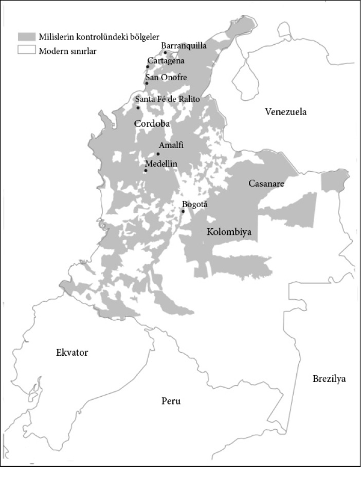

13

Bugün ülkeler neden başarısız oluyor
Zimbabve’de nasıl piyango kazanılır
Harare-Zimbabve’de 2000’in Ocak ayıydı. Teşrifatçı Fallot Chawawa kısmen devlet bankası olan Zimbabve Banking Corporation (Zimbank) tarafından düzenlenen milli piyangoda kazanan bileti belirlemek için kura çekmekle görevliydi. Piyango 1999’un Aralık ayında bu bankadaki hesaplarında 5 bin ya da daha fazla Zimbabve doları bulunan tüm müşterilere açıktı. Chawawa bileti aldığında hayretten donakaldı. Zimbank’ın basın açıklamasında dendiği gibi, “Teşrifatçı Fallot Chawawa 100 bin Zimbabve doları ödüllü bilet kendisine uzatılıp biletin üzerinde ‘Ekselansları RG Mugabe’ yazdığını gördüğünde gözlerine inanamadı.”
1980’den beri Zimbabve’yi her türlü yola başvurarak, genellikle de demir yumrukla idare eden Başkan Robert Mugabe 100 bin Zimbabve doları tutarındaki piyangoyu kazanmıştı ki, bu tutar ülkenin kişi başına düşen milli gelirinin yaklaşık beş katıydı. Zimbank, Mr. Mugabe’nin isminin binlerce hak sahibi arasından çekildiğini açıkladı. Ne şanslı adam! O paraya hiç de ihtiyacı olmadığını söylemeye gerek yok elbette. Çok değil kısa bir süre önce kendisini ve kabinesini yüzde 200’e varan maaş artışlarıyla ödüllendirmişti.
Mugabe’nin piyango bileti Zimbabve’nin sömürücü kurumlarının göstergelerinden yalnızca biridir. Yozlaşma olarak görülebilir fakat aslında yalnızca Zimbabve’deki kurumsal sıkıntının belirtilerinden biridir. Mugabe’nin istediğinde piyangoyu bile kazanabilmesi, Zimbabve’deki hadiseler üzerinde ne denli büyük bir güce sahip olduğunu gösterdiği gibi, ülkedeki sömürücü kurumların boyutları hakkında da fikir veriyor.
Bugün ülkelerin başarısız olmalarının en sık rastlanan sebebi sömürücü kurumlara sahip olmalarıdır. Mugabe rejiminin hüküm sürdüğü Zimbabve bu durumun ekonomik ve sosyal sonuçlarını canlı bir biçimde ortaya koyuyor. Zimbabve’nin ulusal istatistikleri güvenilir olmaktan çok uzak olsa da, 2008’de Zimbabve’nin kişi başına milli geliri ülkenin bağımsızlığını kazandığı 1980’deki rakamın en iyi tahminle yarısı kadardı. Yeterince acıklı gibi görünse de aslında bu rakamlar Zimbabve’nin yaşam standartlarındaki gerilemenin boyutlarını tam anlamıyla ifade etmiyor. Devlet çökmüş, neredeyse hiçbir temel kamu hizmetini sağlayamaz hale gelmişti. 2008-2009’da sağlık sistemindeki gerileme ülke genelinde bir kolera salgınına yol açtı. Bu, 10 Ocak 2010 itibarı ile rapor edilmiş 98.741 vaka ve 4.293 ölümle, son 15 yılın en ölümcül kolera salgınıydı. Öte yandan kitlesel işsizlik benzeri görülmemiş seviyelere tırmandı. 2009 başlarında BM İnsani İşler Koordinasyon Ofisi işsizlik oranının yüzde 94 gibi inanılmaz bir seviyeye ulaştığını açıkladı.
Sahra-altı Afrika’nın büyük bölümünde olduğu gibi Zimbabve’deki çoğu ekonomik ve siyasal kurumun kökleri de sömürgecilik dönemine kadar uzanır. 1890’da Cecil Rhodes’un İngiliz Güney Afrika Kumpanyası, o zamanlar bir krallık olan Matebaland’deki Ndebele’ye ve ayrıca bitişiğindeki Mashonaland’e bir askeri sefer düzenledi. Sahip oldukları üstün silah gücü Afrikalıların direnişini kısa zamanda bastırdı ve 1901’de, bugün Zimbabve’nin olduğu bölgede, adını Rhodes’dan alan Güney Rodezya sömürgesi kuruldu. İngiliz Güney Afrika Kumpanyası artık bölgede imtiyaz sahibi olduğundan Rhodes değerli taşlar arayıp çıkararak para kazanmayı umuyordu. Bu girişimler hiçbir zaman hayata geçmedi fakat tarıma son derece elverişli araziler beyaz göçmenleri cezbetmeye başladı. Bu yerleşimciler çok geçmeden ülkenin çoğunu sahiplendiler. 1923’te kendilerini İngiliz Güney Afrika Kumpanyası’nın idaresinden kurtarıp İngiliz hükümetini kendilerine özerklik vermeye ikna ettiler. Bunun ardından yaşananlar 10 yıl kadar önce Güney Afrika’da olanlara çok benziyordu. 1913 Yerli Arazileri Kanunu, Güney Afrika’da bir ikili ekonomi yaratmıştı. Rodezya da benzer yasalar çıkardı ve Güney Afrika modelinden ilham alınarak 1923’ün hemen ardından beyazlara mahsus bir apartheid devleti inşa edildi.
1950’lerin sonu, 1960’ların başlarında Avrupalı sömürge imparatorlukları çökerken Rodezya’da nüfusun yüzde 5’ine karşılık gelen Ian Smith liderliğindeki beyaz elit 1965’te İngiltere’den ayrılarak bağımsızlık ilan etti. Uluslararası camiada Rodezya’nın bağımsızlığını tanıyan yalnızca birkaç ülke çıktı ve Birleşmiş Milletler bu durum karşısında ekonomik ve siyasal yaptırımlar uyguladı. Siyahi yurttaşlar komşu ülkeler Mozambik ve Zambiya’daki üslerden bir gerilla savaşı örgütlediler. Uluslararası baskı ve iki ana grubun, Mugabe’nin ZANU’nun (Zimbabve Afrika Ulusal Birliği) ve Joshua Nkomo liderliğindeki ZAPU’nun (Zimbabve Afrika Halk Birliği) ateşlediği isyan beyaz rejimin hâkimiyetine son veren bir mutabakatla sonuçlandı. 1980’de Zimbabve devleti kuruldu.
Mugabe bağımsızlığın ardından hızla kendi hâkimiyetini oluşturdu. Rakiplerini ya şiddet yoluyla saf dışı bıraktı ya da onları bir yerlere atadı. En korkunç şiddet eylemleri ZAPU destekçilerinin merkezi olan Matabeleland’de meydana geldi ve 1980’lerin başlarında 20 bin kadar insan öldürüldü. 1987’ye gelindiğinde ZAPU, ZANU’yla birleşerek ZANU-PF’yi oluşturdu ve Joshua Nkomo siyasal olarak dışlandı. Mugabe bağımsızlık müzakerelerine dayanarak anayasayı yeniden yazma olanağı buldu; kendini başkan yaptı (önce başbakan yapmıştı); yine bağımsızlık müzakereleri gereği beyazların seçmen kütüğünü kaldırdı ve nihayet 1990’da Senato’dan tümüyle kurtuldu ve yasama meclisinde kendisinin aday gösterebileceği pozisyonlar oluşturdu. Mugabe idaresinde bir de facto tek parti devletiydi sonuç.
Bağımsızlıkla birlikte Mugabe beyaz rejimin oluşturduğu bir dizi sömürücü ekonomik kurumun idaresini de devraldı. Bunlar arasında fiyatlara ve uluslararası ticarete yönelik bir sürü düzenleme, devletçe işletilen sanayi kurumları ve zorunlu tarımsal pazarlama komiteleri vardı. ZANU-PF destekçilerine verilen işlerle devlet memuru sayısı hızla arttı. Ekonomideki sıkı hükümet düzenlemeleri ZANU-PF elitin işine geliyordu çünkü kendi siyasal tekellerine meydan okuyabilecek bağımsız bir Afrikalı işadamları sınıfının ortaya çıkmasını zorlaştırıyordu. Bu 2. bölümde gördüğümüz 1960’ların Gana’sındaki duruma çok benziyordu. Ve elbette, ironik bir biçimde, bu durum beyazları asıl ticari sınıf haline getirdi. Bu dönem boyunca beyaz ekonominin temel güçleri, özellikle de son derece randımanlı tarımsal ihracat sektörü aynı kaldı. Fakat bu durum ancak Mugabe gözden düşünceye dek sürdü.
Düzenleme modeli ve piyasa müdahalesi zamanla istikrarsız hale geldi ve ciddi bir mali krizin ardından 1991’de Dünya Bankası ve Uluslararası Para Fonu’nun desteğiyle bir kurumsal değişim süreci başlatıldı. Gerileyen ekonomik performans sonunda ZANU-PF’nin tek parti yönetimine karşı ciddi bir muhalefetin ortaya çıkmasına yol açtı: Demokratik Değişim Hareketi (MDC). 1995 parlamento seçimleri rekabetten çok uzaktı. ZANU-PF oyların yüzde 81’ini ve 120 sandalyenin 118’ini kazandı. Bu parlamento üyelerinin 55’i seçimi rakipsiz kazandı. Bir yıl sonraki başkanlık seçimi başıbozukluğa ve yolsuzluğa ilişkin daha da fazla gösterge sunuyordu. Mugabe oyların yüzde 93’ünü almıştı fakat iki rakibi, Abel Muzorewa ve Ndabaningi Sithole hükümeti baskı ve yolsuzlukla suçlayarak seçimlerden önce adaylıktan çekilmişlerdi.
2000’den sonra, tüm yozlaşmaya rağmen, ZANU-PF’nin gücü zayıflıyordu. Halk oyunun yalnızca yüzde 49’unu alabilmiş ve 63 sandalye kazanabilmişti ki, bunlara da başkent Harare’deki tüm sandalyeleri kazanan MDC tarafından itiraz edildi. Mugabe 2002 başkanlık seçimlerini yüzde 56 oyla ucu ucuna kazanmıştı. Her iki seçimi de ZANU-PF’nin kazanmasının nedeni yalnızca şiddet, gözdağı ve seçim yolsuzluğuydu.
Mugabe’nin çöken siyasal hâkimiyetine yanıtı hem baskıyı hem de oy satın almaya yönelik devlet politikalarını artırmak oldu. Beyaz toprak sahiplerine karşı geniş çaplı bir saldırı başlattı. 2000’den itibaren bir dizi kapsamlı toprak işgali ve kamulaştırmayı teşvik etti ve destek sağladı. Bunlar genellikle sözde bağımsızlık savaşında savaşmış eski askerlerin oluşturduğu savaş gazileri derneklerinin önderliğinde gerçekleştirildi. Kamulaştırılan arazilerin bir kısmı bu gruplara verildi fakat çoğu yine ZANU-PF elitlerine gitti. Mugabe ve ZANU-PF sayesinde mülkiyet haklarının güvenceden yoksun olması, tarımsal üretimin ve verimliliğin çöküşüne yol açtı. Ekonomi çökerken geri kalan tek şey oy satın almak için para basmaktı ki, bu da muazzam bir hiperenflasyona yol açtı. 2009 Ocak’ında Güney Afrika randı gibi yabancı paraların kullanımı yasallaştı ve değersiz bir kâğıt parçasına dönen Zimbabve doları tedavülden kalktı.
1980 sonrasında Zimbabve’de yaşananlar bağımsızlık sonrasının Sahra-altı Afrika’sı için olağandı. Zimbabve 1980’de son derece sömürücü siyasal ve ekonomik kurumlar devralmıştı. Bu kurumlar ilk 15 yıl nispeten olduğu gibi kaldı. Seçimler sırasında bu kurumlar kapsayıcılıktan çok uzaktı. Ekonomik kurumlar bir nebze değişti; örneğin artık siyahlara karşı açık bir ayrımcılık uygulanmıyordu. Fakat genele bakıldığında kurumlar sömürücü kalmıştı; tek fark Ian Smith ve beyazlar yerine ceplerini dolduranların Robert Mugabe ve ZANU-PF elitlerinin olmasıydı. Zaman içinde bu kurumlar daha da sömürücü hale geldi ve Zimbabve’nin gelirleri tükendi. Zimbabve’deki ekonomik ve siyasal başarısızlık Oligarşinin Tunç Yasası’nın bir başka tezahürüdür; Ian Smith’in sömürücü ve baskıcı rejiminin yerini bu kez Robert Mugabe’nin sömürücü, yozlaşmış ve baskıcı rejimi almıştır. Bu nedenle Mugabe’nin 2000’deki sahte piyangosu, son derece yozlaşmış ve zaman içinde şekillenmiş bir buzdağının yalnızca görünen kısmıdır.
Bugün ülkeler başarısız oluyor; çünkü bu ülkelerin sömürücü kurumları insanların tasarruf, yatırım ve yenilik için ihtiyaç duydukları teşvikleri sağlamıyorlar. Sömürücü siyasal kurumlar sömürüden çıkar sağlayanların gücünü pekiştirerek bu ekonomik kurumlara destek sağlıyorlar. Bu başarısızlığın kökeninde, detayları farklı koşullar altında farklılık gösterseler de, daima bu sömürücü ekonomik ve siyasal kurumlar var. Bu başarısızlık Arjantin, Kolombiya ve Mısır’da göreceğimiz gibi, pek çok durumda yeterli ekonomik faaliyetin olmayışı biçiminde kendini gösterir; çünkü siyasetçiler kaynakları sömürmekten ya da kendilerini ve ekonomik eliti tehdit edecek her türlü ekonomik faaliyeti bastırmaktan son derece memnundular. Birazdan ele alacağımız Zimbabve ve Sierra Leone gibi bazı uç örneklerde sömürücü kurumlar yalnızca yasa ve düzeni değil en temel ekonomik faaliyetleri de yok ederek devletin tamamen acze düşmesine yol açarlar. Sonuç ekonomik durgunluktur ve –Angola, Kamerun, Çad, Kongo Demokratik Cumhuriyeti, Haiti, Liberya, Nepal, Sierra Leone, Sudan ve Zimbabve’nin yakın tarihinin gösterdiği gibi– iç savaşlar, kitlesel boyuttaki zorunlu göçler, kıtlıklar ve salgınlar bu ülkelerin çoğunu 1960’larda olduklarından daha yoksul hale getirmiştir.
Çocukların Seferi
23 Mart 1991’de Foday Sankoh liderliğindeki bir grup silahlı adam sınırı geçerek Liberya’dan Sierra Leone’ye girdiler ve güneydeki sınır kasabası Kailahun’a saldırdılar. Sankoh daha önce Sierra Leone ordusunda bir onbaşıydı ve 1971’de Siaka Stevens hükümetine karşı başarısız bir darbe girişiminde yer aldığı için hapsedilmişti. Serbest bırakıldıktan sonra kendini en sonunda diktatör Albay Kaddafi’nin Afrikalı devrimciler için kullandığı bir eğitim kampına katıldığı Libya’da buldu. Orada Liberya’daki hükümeti devirme planları yapan Charles Taylor’la tanıştı. Taylor 1989 Noel arifesinde Liberya’yı işgal ettiğinde Sankoh yanındaydı ve Sankoh Sierra Leone’yi işgal ettiğinde de yanında Taylor’un adamlarından, çoğunlukla da Liberyalılardan ve Burkinabé’lerden (Burkina Faso yurttaşları) oluşan bir grup vardı. Kendilerine Devrimci Birleşik Cephe-RUF diyorlardı ve APC’nin yozlaşmış ve zalim hükümetini devirmek için orada olduklarını duyuruyorlardı.
Önceki bölümde gördüğümüz gibi, Siaka Stevens ve onun başında bulunduğu Tüm Halkın Kongresi-APC, tıpkı Mugabe ve ZANU-PF’nin Zimbabve’de yaptığı gibi Sierra Leone’nin sömürge idaresinden kalma sömürücü kurumlarını devralıp daha da pekiştirdi. 1985’e gelindiğinde kanser hastası Stevens yerine Joseph Momoh’u getirdiğinde ekonomi çöküyordu. Stevens, “inek bağlandığı yerde otlar” özdeyişini alıntılamaktan büyük keyif duyuyordu ve görünüşe göre ironi de yapmıyordu. Eskiden Stevens’ın “otladığı” yerde şimdi Momoh otluyordu. Yollar delik deşik olmuş, okullar arasındaki bütünlük bozulmuştu. Enformasyon bakanlığı vericiyi satınca 1987’de ulusal televizyon yayını durdu ve 1989’da radyo sinyallerini Freetown dışına aktaran bir radyo kulesi yıkıldı, böylece başkent dışında yayın durdu. Başkent Freetown’da bir gazetede yayımlanan bir analiz kulağa oldukça doğru geliyordu:
Momoh, iktidarının sonlarına doğru memurlara, öğretmenlere hatta Paramount Chief’lere [bile] ödeme yapmayı kesti. Merkez hükümet çöktü ve ardından elbette sınır ihlalleri, “isyancılar” ve Liberya sınırından akan tüm o otomatik silahlar gündeme geldi. NPRC, isyancılar, isyancılara dönüşen askerler; hükümet ortadan kaybolduğunda meydana çıkması beklenebilecek kaosun her boyutu mevcuttu. Bunların hiçbiri sorunlarımızın nedenleri değildi, sonuçlarıydı.
Stevens’ın aşırı sömürücü kurumlarının yol açtığı kısır döngünün sonuçlarından biri olan Momoh idaresindeki devletin çöküşü, RUF’un 1991’de sınırdan girmesini engelleyecek hiçbir şeyin olmaması anlamına geliyordu. Devletin buna karşı koyacak gücü yoktu. Stevens orduyu çoktan etkisiz hale getirmişti; çünkü kendisini devireceklerinden korkuyordu. Bu yüzden az sayıda silahlı adamın ülkenin büyük bölümünde kaos yaratması kolaydı. Hatta “Demokrasi’ye Giden Yollar” adında bir manifestoları bile vardı ve siyahi entelektüel Franz Fanon’dan bir alıntıyla başlıyordu: “Her kuşak, ister yerine getirsin ister ihanet etsin, kendi misyonunu keşfetmelidir.” “Ne uğruna savaşıyoruz?” adlı bölüm şöyle başlıyordu:
Savaşmaya devam ediyoruz çünkü devlet destekli yoksulluğun ebedi kurbanları olmaktan ve otokratik idare ve militarizm yıllarının getirdiği aşağılanmadan bıktık. Fakat kendimizi tutacağız ve barışla olan randevumuzu sabırla bekleyeceğiz ve o zaman hepimiz kazanacağız. Her ne pahasına olursa olsun barışa bağlıyız fakat bağlı olmadığımız bir şey varsa o da barışın kurbanları olmaktır. Amacımızın adil olduğunu ve Tanrı’nın yeni bir Sierra Leone inşa etme mücadelemizde bizi asla yalnız bırakmayacağını biliyoruz.
Sankoh ve diğer RUF liderleri siyasi şikâyetlerle yola çıkmış olabilirler ve ilk zamanlarda onları harekete katılmaya teşvik eden APC’nin sömürücü kurumlarından çeken insanlardı; fakat durum hızla değişti ve kontrolden çıktı. RUF’un “misyonu” ülkeyi büyük bir ıstıraba sürükledi; Sierra Leone’nin güneyindeki Geoma’dan bir gencin ifadesinde belirtildiği gibi;
Bazılarımızı topladılar [...] Seçtikleri bazı arkadaşlarımızı, iki arkadaşımızı öldürdüler. Bu insanların babaları şefti ve asker postalları, evlerinde asker malzemeleri vardı. Vurulmalarının tek nedeni askerlere yataklık etmekle suçlanmalarıydı. Şefler de öldürüldü; hükümetin bir parçası oldukları için. Birini yeni şef yaptılar. Hâlâ bizi APC’den kurtarmak için geldiklerini söylüyorlardı. Bir noktadan sonra artık vuracakları insanları seçmiyorlardı, öylece insanlara ateş ediyorlardı.
İşgalin ilk yılında RUF’un sahip olabileceği tüm entelektüel kökler kurumuştu. Sankoh artan vahşet olaylarını eleştirenleri infaz etti. Çok geçmeden gönüllü olarak RUF’a katılanlar azaldı. Onlar da zorla adam toplamaya başladılar; özellikle de çocukları. Aslında, tarafların hepsi böyle yaptı, ordu da dahil. Eğer Sierra Leone iç savaşı nihayetinde daha iyi bir toplum inşa etmek için verilmiş bir savaşsa, bu çocukların savaşıydı. Çatışma katliamlarla, toplu tecavüzlerle, ellerin ve kulakların kesilmesi gibi ağır insan hakları ihlalleriyle şiddetini artırdı. RUF kontrolünü ele geçirdiği bölgelerde ekonomik sömürüye de girişiyordu. Bu en açık biçimde insanların çete zoruyla madenlerde çalıştırıldığı elmas madenleri bölgesinde görülse de aslında durum her yerde aynıydı.
RUF vahşetler, katliamlar ve örgütlü emek sömürüsünde yalnız değildi. Hükümet de aynısını yapıyordu. Yasa ve düzen ortadan kalktığından halkın kimin asker kimin isyancı olduğunu anlaması güçleşmişti. Askeri disiplin tümüyle yok olmuştu. 2001’de savaş bittiğinde muhtemelen 80 bin kişi hayatını kaybetmiş ve tüm ülke harap olmuştu. Yollar, evler ve yapılar tamamen tahrip olmuştu. Bugün doğudaki büyük bir elmas üretim bölgesi olan Koidu’ya giderseniz yanıp kül olmuş, kurşun delikleriyle delik deşik sıra sıra evler görürsünüz.
1991’e gelindiğinde Sierra Leone’de devlet tamamen iflas etmişti. Kral Shyaam’ın Bushgong’da ne başlattığını anımsayalım: Gücünü pekiştirmek için sömürücü kurumlar oluşturmuş ve toplumun geri kalanının tüm üretimini sömürmüştü. Fakat merkezi otorite tamamen onun elindeyken sömürücü kurumlar bile yasa ve düzenin, merkezi otoritenin ya da mülkiyet haklarının olmadığı Ksai Nehri’nin diğer yanındaki Lele toplumuyla özdeşleşen duruma göre bir ilerleme sayılırdı. Düzenin ve merkezi otoritenin olmayışı, kısmen siyasal merkezileşme sürecinin tarihsel bakımdan çoğu Sahra-altı Afrika ülkesinde gecikmeye uğraması nedeniyle, fakat aynı zamanda sömürücü kurumların mevcut merkezi devlet otoritesini de yok etmesi nedeniyle, yakın dönemde pek çok Afrika ülkesinin kaderi haline gelmiş ve devletin iflasına yol açmıştı.
Sierra Leone geçirdiği 10 yıllık kanlı iç savaş döneminde, 1991’den 2011’e kadar, iflas etmiş devletin tipik bir örneğiydi. Başlangıçta sömürücü kurumların pençesindeki ülkelerden biriydi sadece; tek fark söz konusu sömürücü kurumların bilhassa habis ve verimsiz olmalarıydı. Ülkeler bulundukları coğrafya ya da sahip oldukları kültür nedeniyle başarısız olmazlar, güç ve zenginliğin devleti idare edenlerin; karışıklığa, çatışmaya ve iç savaşa neden olanların elinde yoğunlaşmasına neden olan sömürücü kurumlar mirası yüzünden başarısız olurlar. Ayrıca sömürücü kurumlar en temel kamu hizmetlerinde bile yatırımların ihmal edilmesine neden olarak devletin yavaş yavaş iflasa sürüklenmesine doğrudan katkıda bulunurlar; tıpkı Sierra Leone’de olduğu gibi.
Varına yoğuna el koyarak halkı yoksullaştıran ve ekonomik gelişime engel olan sömürücü kurumlar Afrika, Asya ve Güney Amerika’da oldukça yaygındırlar. Charles Taylor, Sierra Leone’de iç savaşın başlamasına yardım ederken aynı zamanda Liberya’da devletin iflasına neden olan vahşi bir çatışma da başlatıyordu. Sömürücü kurumlar ülkeleri iç savaşa sürüklüyor ve Afrika’nın her yerinde, örneğin Angola, Fildişi Sahili, Demokratik Kongo Cumhuriyeti, Mozambik, Kongo Cumhuriyeti, Somali, Uganda ve Sudan’da devletler iflas ediyordu. Sömürü, Maya şehir devletlerinin neredeyse bin yıl önce ürettiğinden hiç de farklı olmayan çatışmalara zemin hazırlıyordu. Çatışma devletin iflasını hızlandırıyordu. Dolayısıyla, günümüzde ülkelerin başarısız olmalarının bir başka nedeni de devletlerinin iflas etmesidir. Bu da, onlarca yıl sömürücü ekonomik ve siyasal kurumlarla idare edilmenin bir sonucudur.
Kimdir bu devlet?
Zimbabve, Somali ve Sierra Leone örnekleri Afrika’daki hatta Asya’daki bazı fakir ülkeler baz alındığında normal gibi görünse de aslında biraz uç örneklerdir. Peki, Latin Amerika ülkelerinin devletleri iflas etmemiş midir? Onların başkanları piyango kazanacak kadar pişkin değil midir?
Kolombiya’da And Dağları, Karayip Denizi’nin kıyısındaki geniş bir kıyı ovası üzerinden kuzeyle birleşir. Kolombiyalılar Andlardaki tierra fria’dan yani “soğuk ülke”den ayırmak için buraya tierra caliente yani “sıcak ülke” derler. Kolombiya son 50 yıl boyunca çoğu siyaset bilimcisi ve hükümet tarafından demokratik bir ülke olarak görüldü. Birleşik Devletler potansiyel bir serbest ticaret antlaşması için görüşmekten ve ona her türlü yardımı yapmaktan memnundu; özellikle de askeri yardımsa. Bir paktla siyasal iktidar ve başkanlığın 1974’e dek iki geleneksel parti olan Muhafazakârlar ve Liberaller arasında el değiştirmesi sağlanmıştı gerçi, fakat yine de 1958’de noktalanan kısa ömürlü bir askeri hükümetin ardından düzenli olarak seçime gidilmişti. Dahası bu pakt, yani Ulusal Cephe, bir referandumla Kolombiya halkının onayını almıştı; tüm bunlar yeterince demokratik görünüyor.
Fakat Kolombiya’nın uzun bir demokratik seçim geçmişi olsa da kapsayıcı kurumları yoktu. Bunun yerine, Kolombiya tarihi insan hakları ihlalleriyle, yargısız infazlarla, sivillere yönelik şiddetle ve iç savaşla lekelenmişti. Bunlar pek de bir demokrasiden beklediğimiz sonuçlar değil. Kolombiya’daki iç savaş, devlet ve toplumun çöküp kaosun hüküm sürdüğü Sierra Leone’dekinden farklıydı. Fakat her şeye rağmen bir iç savaştı, hem de çok daha fazla kayba neden olan bir iç savaş. 1950’lerin askeri idaresi de bir ölçüde İspanyolcada kısaca La Violencia yani “Şiddet” olarak bilinen bir iç savaşın karşılığıydı. O tarihten itibaren bir dizi isyancı grup, genellikle komünist devrimciler, kırsal kesimi adam kaçırmalar ve cinayetlerle kasıp kavurdu. Kolombiya’nın kırsal kesimlerinde bu nahoş seçeneklerden uzak durmak için tam olarak “aşı” anlamına gelen vacuna ödemeniz gerekiyordu; bu da her ay bazı silahlı eşkıya gruplarına ödeme yaparak kendinizi öldürülmeye ya da kaçırılmaya karşı aşılatmanız demekti.
Kolombiya’da silahlı grupların hepsi komünist değildi. 1981’de Kolombiya’daki başlıca komünist gerilla grubunun, Fuerzas Armadas Revolucionarias de Colombia’nın (Kolombiya Devrimci Silahlı Kuvvetleri, FARC) üyeleri, sıcak ülke’de Antiouquia eyaletinin kuzeydoğusundaki Amalfi adlı küçük bir kentte yaşayan bir mandıracı olan Jesus Castaño’yu kaçırdı. FARC, Kolombiya kırsalında küçük bir servet anlamına gelen 7.500 dolar tutarında fidye istedi. Aile çiftliği ipotek ederek parayı karşıladı; fakat yine de babalarının cesedini bir ağaca zincirlenmiş halde buldular. Castaño’nun oğulları Carlos, Fidel ve Vicente’nin canına tak etmişti, FARC üyelerinin peşine düşüp bu olayın hesabını sormak için Los Tanqueros adında bir milis grubu kurdular. Kardeşler örgütlenme konusunda iyiydi, grupları kısa zamanda büyüdü ve benzer nedenlerle kurulan diğer milis gruplarıyla ortak çıkarlar bulmakta gecikmediler. Ülkenin pek çok bölgesindeki Kolombiyalılar solcu gerillalardan mustaripti ve bunlara karşı sağcı milisler oluşturuldu. Milisler toprak sahipleri tarafından kendilerini gerillalara karşı savunmak için kullanılıyorlardı fakat aynı zamanda uyuşturucu kaçakçılığı, haraç, adam kaçırma ve cinayetle de meşguldüler.
1997’ye gelindiğinde Castaño kardeşlerin liderliğindeki milisler Autodefensas Unidas de Colombia (Kolombiya Birleşik Savunma Kuvvetleri, AUC) adında bir ulusal milis örgütü kurmayı başardılar. AUC ülkenin geniş kesimlerine yayıldı, özellikle de sıcak ülkedeki Córdoba, Sucre, Magdalena ve César eyaletlerine. 2001’de AUC’nin emrinde belki de 30 bin kadar silahlı adam mevcuttu ve farklı bloklar halinde örgütlenmişti. Córdoba’daki milis kuvveti Bloque Catatumbo, Salvatore Mancuso tarafından idare ediliyordu. AUC güçlenmeye devam ederken stratejik bir karar alarak siyasete yöneldi. Bazı AUC liderleri Córdoba’nın Santa Fé de Ralito kentinde önde gelen siyasetçilerle bir toplantı düzenlediler. AUC’nin önde gelen üyelerinden “Jorge 40” (Rodrigo Tovar Pupo’nun lakabı), Adolfo Paz (Diego Fernando “Don Berna” Murillo’nun takma adı) ve Diego Vecino (gerçek adı Edwar Cobo Téllez) ile aralarında senatör William Montes ve senatör Miguel de la Espriella’nın da olduğu siyasetçiler “Ülkeyi yeniden inşa etme” çağrısında bulunan bir ortak belgeye, bir pakta imza attılar. Bu noktada Kolombiya’nın pek çok bölgesi AUC’nin kontrolündeydi ve 2002 Kongre ve Senato seçimlerinde kimin seçileceğini ayarlamak onlar için gayet basitti. Örneğin, Sucre’deki San Onofre beldesinde seçimi milis lideri Cadena (“Zincir”) tarafından ayarlamıştı. Bir görgü tanığı olanları şöyle tarif ediyordu:
Cadena’nın gönderdiği kamyonlar San Onofre’nin mahallelerini, corregimiento’larını25 ve kırsal kesimlerini dolaşıp adam topladı. Bazı bölge sakinlerine göre [...] 2002 seçimleri için yüzlerce köylü parlamento seçimlerinde oy vermek zorunda oldukları adayların, yani Senato için Jairo Merlano ve Kongre için Muriel Benito Rebollo’nun yüzlerini görsünler diye Plan Parejo corregimiento’suna götürüldü.
Cadena belediye meclis üyelerinin isimlerini bir torbaya koydu, ardından iki isim çekti ve Muriel’in kazanmaması halinde hem bunları hem de rastgele çektiği diğer isimleri öldüreceğini söyledi.
Bu tehdit işe yaramış görünüyor; iki aday da tüm Sucre’de 40’ar bin oy aldılar. San Onofre belediye başkanının Santa Fé de Ralito paktını imzalamasının şaşırtıcı bir yanı yoktu. Muhtemelen kongre üyeleri ve senatörlerin üçte biri 2002 seçimlerini milislerin desteğiyle kazandılar; Kolombiya’da milislerin kontrolündeki bölgeleri gösteren Harita 20 ne kadar geniş bir alanı denetim altında tuttuklarını gösteriyor. Salvatore Mancuso bile olanları bir röportajda şöyle anlatıyordu:
Kongre’nin yüzde 35’i Savunma gruplarının eyaletlerindeki bölgelerden seçildi. Bu eyaletlerde vergileri toplayan bizdik, adaleti biz sağlıyorduk, ordu ve bölgenin kontrolü bize aitti ve siyasete girmek isteyen herkes oradaki siyasal temsilcilerimizin üstesinden gelmek zorundaydı.
Siyaset ve toplum üzerinde bu boyutta bir milis hâkimiyetinin ekonomik kurumlar ve kamu düzeni üzerindeki etkisini tasavvur etmek zor değildir. AUC’nin yayılması barışçıl bir hadise değildi. Yalnızca FARC’la savaşmadılar, aynı zamanda masum sivilleri öldürdüler yüzbinlerce insanı korkutup yuvalarından ettiler.

Harita 20: Kolombiya’da milis kuvvetlerinin durumu, 1997-2005.
Norveç Mülteci Konseyi’nin Ülke İçinde Yerinden Edilme İzleme Merkezi’ne (IDMC) göre 2010 başlarında Kolombiya nüfusunun yaklaşık yüzde 10’u, neredeyse 4,5 milyonu ülke içinde göçe zorlandı. Ayrıca, Manusco’nun belirttiği gibi milisler hükümeti ve tüm işlevlerini üstlenmişlerdi; tabii topladıkları vergilerin sadece kendi ceplerini dolduracak olması kaydıyla. Kolombiya’nın doğusundaki Casanare eyaletinde milis lideri Martín Llanos (gerçek adı Héctor Germán Buitrago) ile Tauramena, Aguazul, Maní, Villanueva, Monterrey ve Sabanalarga belediye başkanları arasındaki sıra dışı bir antlaşma, bu belediya başkanlarının “Casanare Köylü Milisleri”nin emriyle uymak zorunda oldukları aşağıdaki kuralları sıralıyordu:
9) Belediye bütçesinin yüzde 50’sinin idaresinin Casanare Köylü Milisleri’ne verilmesi.
10) Belediye’nin her ihalesinin yüzde 10’unun Casanare Köylü Milisleri’ne verilmesi
11) Casanare Köylü Milisleri’nin düzenlediği tüm mitinglere zorunlu destek verilmesi.
12 Casanare Köylü Milisleri’nin tüm altyapı projelerine dahil edilmesi.
13) Casanare Köylü Milisleri’nin kuracağı yeni siyasal partiye üye olunması.
14) Bu partinin idari programına riayet edilmesi.
Casanare fakir bir eyalet değildi. Tam tersine, tüm Kolombiya eyaletleri arasında kişi başına düşen en yüksek milli gelire sahipti, çünkü kayda değer petrol yatakları vardı; tam da milisleri cezbedecek kaynaklar. Aslında milisler güçlenir güçlenmez sistematik istimlak faaliyetlerini yoğunlaştırmışlardı. Denildiğine göre, bizzat Mancuso 25 milyon dolar değerinde kentsel ve kırsal gayrimenkul edinmişti. Kolombiya’da milisler tarafından yapılan arazi istimlaklerinin tüm kırsal kesimin yüzde 10’unu bulduğu tahmin ediliyor.
Kolombiya örneğindeki, çökmenin eşiğine gelmiş başarısız bir devlet değildir. Fakat yeterince merkezileşmemiş, tüm bölgeleri üzerinde tam bir kontrol sağlamaktan çok uzak bir devlettir. Devlet Bogotá ve Barranquilla gibi geniş kentsel bölgelerde güvenliği ve kamu hizmetlerini sağlamayı başarsa da, ülkenin önemli bir bölümünde çok az kamu hizmeti yerine getirilebiliyor, yasa ve düzeninse neredeyse hiç sağlanamıyordu. Siyasetin ve kaynakların kontrolü daha ziyade alternatif grupların ve Mancuso gibi kişilerin elindeydi. Ülkenin bazı kesimlerinde ekonomik kurumlar oldukça iyi işliyordu ayrıca beşeri sermaye ve girişim becerileri de hayli yüksek düzeydeydi; diğer kesimlerde ise kurumlar son derece sömürücüydü, asgari ölçüde bir merkezi devlet otoritesi bile sağlanamıyordu.
Bunun gibi bir durumun nasıl olup da on yıllar hatta yüzyıllar boyunca varlığını koruduğunu anlamak biraz zor olabilir. Fakat aslında bir kısır döngü tipi olarak bu durumun kendine has bir mantığı var. Bu tür kısır döngülerde şiddet olayları merkezi devlet kurumlarının olmayışıyla birleşerek toplumun işlevsel organlarını idare eden siyasetçilerle simbiyotik bir ilişkiye girer. Böyle bir simbiyotik ilişkinin doğmasının nedeni, ulusal hükümet milis kuvvetlerinin kendi yöntemlerini uygulamaları için başıboş bıraktığında ulusal siyasetçilerin ülkenin periferisindeki kanunsuzluğu istismar etme imkânı bulmasıdır.
Bu örüntü 2000’lerde bilhassa belirgin hale geldi. 2002’de başkanlık seçimini Álvaro Uribe kazandı. Uribe’nin Castaño kardeşlerle ortak bir yanı vardı; babası FARC tarafından öldürülmüştü. Uribe, önceki yönetimin FARC’la barış sağlama girişimlerini reddeden bir seçim kampanyası yürüttü. 2002’de oy oranı milislerin olduğu bölgelerde diğer bölgelere kıyasla yüzde 3 daha fazlaydı. 2006’da yeniden seçildiğinde bu bölgelerdeki oy oranı yüzde 11 daha fazlaydı. Eğer Mancuso ve ortakları Kongre ve Senato için oy bulabildilerse başkanlık seçimleri için de bulabilirlerdi, özellikle de onların dünya görüşünün kuvvetli bir müttefiki olan ve muhtemelen onlara karşı hoşgörülü olacak bir başkan için. Mancuso’nun yardımcısı ve AUC’un Sinú ve San Jorge bloklarının lideri Jairo Angarita’nın 2005 Eylülü’nde “bugüne dek sahip olduğumuz en iyi başkanın yeniden seçilmesi için” çalışmaktan gurur duyduğunu açıklıyordu.
Senatörler ve kongre üyeleri seçilir seçilmez Uribe’nin isteği doğrultusunda oy kullandılar, böylelikle anayasada özel bir değişiklik yapıp 2006’da yeniden seçildi; 2002’de ilk kez seçildiğinde böyle bir imkâna sahip değildi. Buna karşılık Başkan Uribe de milislere seferberlik halini sona erdirmeleri için son derece hoşgörülü bir yasa çıkardı. Seferberliğin sonu milisliğin sonu demek değildi; aslında milislerin kontrolünü ele geçirdikleri Kolombiya’nın büyük bölümünde ve Kolombiya devletinde milisliğin kurumsallaşması demekti.
Kolombiya’da ekonomik ve siyasal kurumların pek çok veçhesi zamanla daha kapsayıcı hale geldi. Fakat belirli sömürücü unsurlar aynı kaldı. Kanunsuzluk ve güvence altına alınmamış mülkiyet hakları ülkenin çoğu bölgesinde yaygındı ve bu da hem devletin ülkenin çoğu kesiminde kontrol sağlayamamasının hem de merkezi bir devletten yoksun olmanın Kolombiya’daki istisnai biçiminin bir sonucuydu. Fakat bu durum kaçınılmaz bir sonuç değildi. Mevcut kısır döngüyü yansıtan dinamiklerinin bir sonucuydu: Kolombiya’daki siyasal kurumlar siyasetçilere ülkenin çoğu kesiminde kamu hizmetleri sunup yasa ve düzeni sağlamaları için teşvikte bulunmuyor, milislerle ve eşkıyalarla açık ya da örtük işlere girişmelerini engelleyecek sınırlamalar getirmiyordu.
El Corralito
Arjantin 2001 sonlarında bir ekonomik krizin pençesindeydi. Geliri üç yıldır azalıyor, işsizlik artıyordu ve muazzam bir iç borç birikmişti. Bu duruma yol açan politikalar 1989 sonrasında Carlos Menem hükümeti tarafından hiperenflasyonu durdurup ekonomiye istikrar kazandırmak için hayata geçirilmişti. Bir süreliğine başarılı da oldular.
Menem 1991’de Arjantin pesosunu Amerikan dolarına endeksledi. Bir peso, yasayla bir dolara eşitlendi. Döviz kurunda değişiklik olmayacaktı. Mesele hallolmuştu. Yani, neredeyse. Halkı hükümetin gerçekten yasaya bağlı kalacağına inandırmak için onları Amerikan dolarıyla banka hesabı açmaya ikna etti. Dolarlar başkent Buenos Aires’in dükkânlarında kullanılabilir ve tüm şehirdeki bankomatlardan çekilebilirdi. Bu politika ekonomiye istikrar kazandırmaya yarayabilirdi fakat büyük bir dezavantajı vardı. Arjantin’in ihraç mallarını çok pahalı, ithal mallarını ise çok ucuz hale getirdi. İhracat durma noktasına gelirken ithalat coştu. Bunlara para yetiştirmenin tek yolu borç almaktı. Bu sürdürülebilir bir durum değildi. Giderek daha fazla insan pesonun sürdürülebilirliği konusunda endişelenmeye başlarken aynı zamanda zenginliklerinin daha büyük kısmını da bankalardaki dolar hesaplarına yatırmaya başladılar. Ne de olsa eğer hükümet yasayı hiçe sayar ve pesoyu devalüe ederse dolar hesaplarıyla güvende olurlardı, değil mi? Peso hakkında endişelenmekte haklıydılar. Fakat dolarları hakkında çok iyimserdiler.
1 Aralık 2001’de hükümet tüm banka hesaplarını dondurdu, başlangıç olarak 90 günlüğüne. Yalnızca az miktarda nakdin haftalık bazda çekilmesine izin verildi. Bu miktar ilk başta 250 pesoydu ki, hâlâ 250 dolar ediyordu; ardından 300 oldu. Fakat bu paranın ancak peso hesaplarından çekilmesine izin vardı. Dolarlarını pesoya çevirmeye razı olmadıkları sürece kimse dolar hesabından para çekemiyordu. Bunu da kimse istemiyordu. Arjantin bu durumu El Corralito, yani “Küçük Ağıl” olarak adlandırdı: mudiler inek gibi bir ağıla tıkılmışlardı, gidecek hiçbir yerleri yoktu. Nihayet Ocak ayında devalüasyon yürürlüğe sokuldu ve bir peso bir dolar ederken çok geçmeden dört peso bir dolar etmeye başladı. Bu, tasarruflarını dolara yatırmaları gerektiğini düşünenleri haklı çıkarmalıydı. Fakat öyle olmadı, çünkü hükümet tüm dolar hesaplarını zorla pesoya çevirdi; ne var ki, eski bire bir döviz kuru üzerinden. 1.000 dolar tasarrufu olan biri bir anda kendini yalnızca 250 dolarla buldu. Hükümet halkın tasarruflarının üçte ikisini kamulaştırmıştı.
İktisatçılar için Arjantin kafa karıştırıcı bir ülkedir. Nobel ödüllü iktisatçı Simon Kuznets Arjantin’i anlamanın ne kadar güç olduğunu anlatmak için bir keresinde dört tür ülke olduğuna dikkat çekmişti; gelişmiş ülkeler, az gelişmiş ülkeler, Japonya ve Arjantin. Kuznets böyle düşünmüştü çünkü Birinci Dünya Savaşı dolaylarında Arjantin dünyanın en zengin ülkelerinden biriydi. Ardından Batı Avrupa ve Kuzey Amerika’daki diğer zengin ülkelere kıyasla büyük bir gerileme göstermeye başladı; bu durum 1970’ler ve 80’lerde mutlak bir gerilemeye dönüştü. Görünürde Arjantin’in ekonomik performansı kafa karıştırıcıdır fakat kapsayıcı ve sömürücü kurumlar perspektifinden bakıldığında gerilemesinin nedeni daha anlaşılır hale gelir.
1914’ten önce Arjantin’in yaklaşık 50 yıl boyunca sürekli ekonomik büyüme gösterdiği doğrudur fakat bu klasik bir sömürücü kurumlara dayalı büyüme durumudur. Arjantin bu dönemin ardından tarımsal ihracat ekonomisine büyük yatırım yapmış dar bir elitin idaresine girdi. Et, deri ve tahıl fiyatlarının patlama yaptığı bir devirde bu malların ihracatıyla ekonomi büyüdü. Tüm benzer sömürücü kurumlara dayalı büyümeye deneyimleri gibi, ne yaratıcı yıkım ne de yenilik içeriyordu. Ve sürdürülebilir değildi. Birinci Dünya Savaşı dolaylarında artan siyasal istikrarsızlık ve silahlı ayaklanmalar Arjantin elitini siyasal sistemi genişletmeye çalışmaya sevk etti fakat bu kontrol edemeyecekleri kuvvetlerin harekete geçmesine yol açtı ve 1930’da ilk askeri darbe geldi. O tarihten 1983’e kadar Arjantin bir yandan diktatörlükle demokrasi arasında diğer yandan çeşitli sömürücü siyasal kurumlar arasında gidip geldi. 1970’lerde doruk noktasına ulaşan askeri rejim döneminde kitlesel baskı söz konusuydu ve en az dokuz bin, muhtemelen çok daha fazla insan yasadışı yollarla infaz edildi. Yüz binlercesi hapse atıldı ve işkence gördü.
Sivil idarenin olduğu dönemlerde seçimler vardı; yani bir çeşit demokrasi. Fakat siyasal sistem kapsayıcı olmaktan son derece uzaktı. 1940’larda Perón’un yükselişinin ardından Arjantin’e onun kurduğu parti hâkimdi; kısaca Perónist Parti olarak bilinen Partido Justicialista. Perónistler oy satın alan, iltimas geçen, siyasal destek karşılığında devlet ihalelerinde ve memuriyetlerde yolsuzluk yapan muazzam bir siyasal makine sayesinde seçimleri kazandılar. Bir bakıma bu bir demokrasiydi fakat çoğulcu değildi. Güç Perónist Parti’nin elinde aşırı ölçüde yoğunlaşmıştı; buna karşın yapabileceği şeyler üzerinde çok az kısıtlama söz konusuydu, en azından ordunun onu iktidardan uzaklaştırmaya gücünün yetmediği dönemde. Daha önce gördüğümüz gibi eğer Yüksek Mahkeme partinin politikalarından birine karşı çıkarsa onun için hiç de iyi olmuyordu.
Perón 1940’larda işçi hareketini bir siyasal taban olarak geliştirdi. Bu hareket 1970’lerde ve 80’lerde ordunun baskısıyla zayıflayınca partisinin yaptığı da sadece oy satın alacak başkalarını bulmak oldu. Ekonomik politikalar ve kurumlar eşit şartlar oluşturmak için değil destekçilerine gelir sağlamak için tasarlanmıştı. Başkan Menem 1990’larda onu yeniden seçilmekten alıkoyan bir dönem kısıtlamasıyla karşılaşınca yine aynı şey olmuş, basitçe anayasayı yeniden yazarak dönem kısıtlamasından kurtulmuştu. El Corralito’nun gösterdiği gibi, Arjantin’de seçimler ve halkın seçtiği hükümetler olsa bile hükümet rahatlıkla mülkiyet haklarına baskın gelebiliyor ve fütursuzca, bir ceza görmeden kendi yurttaşlarının mallarına el koyabiliyordu. Arjantin başkanları ve siyasal eliti üzerinde çok az denetim söz konusuydu ve elbette çoğulculuktan eser yoktu.
Kuznets’in ve şüphesiz Buenos Aires’i ziyaret eden başka pek çok kişinin kafasını karıştıran şey şehrin Lima, Guatemala City ve hatta Mexico City’den çok farklı görünmesidir. Yerli halka rastlamaz, eski kölelerin torunlarını görmezsiniz. Genellikle gördüğünüz şey Belle Epoch döneminde, yani sömürücü kurumlara dayalı büyüme sırasında inşa edilmiş binalar ve bu dönemin görkemli mimarisidir. Fakat Buenos Aires’te gördüğünüz Arjantin’in yalnızca bir yüzüdür. Örneğin Menem, Buenos Aires’ten değildi. Buenos Aires’in kuzeybatısında ve çok uzağında kalan dağlarda, La Rioja eyaletindeki Anillaco’da doğmuş ve eyalete üç kez valilik yapmıştı. Amerika’nın İspanyollar tarafından fethedildiği dönemde Arjantin’in bu bölgesi İnka İmparatorluğu’nun merkezden uzak bir bölgesiydi ve yerli halkın oluşturduğu yoğun bir nüfusa sahipti (bkz. Harita 1). İspanyollar burada encomienda’lar kurdular ve kuzeydeki Potosí’nin madencilerinin ihtiyaçlarını karşılamak üzere tarıma ve katır yetiştiriciliğine dayalı son derece sömürücü bir ekonomi gelişti. Aslında, bölgeyi kanunsuzca yöneten ve ordusunu Buenos Aires’in üzerine süren meşhur Facundo Quiroga, La Rioja’dan çıkmıştı. Arjantin’in siyasal kurumlarının gelişiminin öyküsü, La Rioja gibi iç eyaletlerin Buenos Aires’le nasıl anlaşmalara vardıklarının öyküsüdür. Bu anlaşmalar bir ateşkesti; La Rioja “savaş lordları” Buenos Aires’i para kazanması için kendi haline bırakacaklardı. Karşılığında Buenos Aires eliti de “iç kesimin” kurumlarında reform yapmaktan vazgeçecekti. Böylece Arjantin ilk bakışta Peru ya da Bolivya’dan farklı bir dünya olarak görünür fakat bir kez Buenos Aires’in zarif bulvarlarından uzaklaştığınızda çok da fark yoktur. Ülkenin diğer sömürücü Latin Amerika ülkelerininkiyle çok benzer bir rota izlemesinin nedeni de, iç bölgelere ait özelliklerin ve politikaların Arjantin kurumlarında yerleşik hale gelmeleridir.
Seçimlerin ne kapsayıcı ekonomik kurumlar ne de kapsayıcı siyasal kurumlar getirmesi Latin Amerika’da alışıldık bir durumdur. Kolombiya’da milisler ulusal seçimlerde oyların üçte birine hile karıştırabiliyorlardı. Tıpkı Arjantin gibi günümüz Venezuela’sında da demokratik seçimlerle işbaşı yapan Huge Chávez hükümeti rakiplerine saldırıyor, kamu sektöründeki işlerden kovuyor, yazarlarını beğenmediği gazeteleri kapatıyor ve mülke el koyuyor. Chávez 1720’lerin İngiltere’sinde Black Act’le John Huntridge’i mahkûm edemeyen Sir Robert Walpole’dan hem daha güçlü hem de yetkileri onunkilerden daha az sınırlı. Huntridge günümüz Venezuellası’nda çok daha fazla zorlanırdı.
Latin Amerika’da ortaya çıkan demokrasi prensip olarak elit idaresine taban tabana zıt olmasına ve hem retorikte hem de fiiliyatta hak ve fırsatları en azından bir kısım elitin elinden alıp yeniden bölüştürmeye çalışmasına rağmen, kökleri iki nedenden ötürü sıkı sıkıya sömürücü rejimlere dayalıdır. Birincisi, yüzlerce yıl süren sömürücü rejimlerin yarattığı eşitsizlikler seçmenlerin bu yeni yeni ortaya çıkan demokrasilerde aşırı politikalar savunan politikacıların lehine oy kullanmasına neden oldu. Bunun nedeni Arjantinlilerin naif olmaları ve Juan Perón ya da daha yakın dönemden örnek vermek gerekirse Menem ya da Kirchnerler gibi Perónist siyasetçilerin özverili olup yalnızca halkın çıkarlarını gözettiklerini düşünmeleri ya da Venezuelalıların kurtuluşu Chávez’de görmeleri değildir. Aksine, çoğu Arjantinli ve Venezuelalı tüm diğer siyasetçilerin ve partilerin, uzun süredir yurttaşların taleplerini dile getirmeyi, yol ve eğitim gibi en temel kamu hizmetleri yerine getirmeyi ve onları yerel elitin sömürüsünden kurtarmayı başaramadıklarının farkındadır. Bugün pek çok Venezuelalı beraberinde yozlaşma ve israf getirse bile Chávez’in benimsediği politikaları destekliyor; tıpkı 70’lerde çoğu Arjantinlinin Perón’un politikalarını desteklediği gibi. İkincisi, uygulanabilir alternatifler üreten etkin bir parti sistemi yerine siyaseti Perón ve Chávez gibi diktatörler için bu kadar çekici kılan ve onların lehine olacak şekilde taraflı hale getiren, yine altta yatan sömürücü kurumlardır. Perón, Chávez ve Latina Amerika’daki başka düzinelerce diktatör yalnızca oligarşinin tunç yasasının başka bir veçhesidir ve adından da anlaşıldığı gibi, bu yasanın kökleri elitin kotrolündeki rejimlere dayanmaktadır.
Yeni mutlakıyetçilik
Kasım 2009’da Kuzey Kore hükümeti iktisatçıların para reformu olarak adlandırdıkları bir uygulama başlattı. Bu tür reformların nedeni genellikle şiddetli enflasyon dönemleridir. Ocak 1960’da Fransa’da gerçekleştirilen bir para reformu tedavüldeki frangın 100 katına karşılık gelen yeni bir frangı uygulamaya koydu. Eski franklar tedavülde kaldı, hatta yeni frangın değerinde değişiklik oldukça insanlar fiyat vermek için eski frangı kullandı. Sonunda Fransa avro’ya geçince Ocak 2002’de eski franklar tedavülden kaldırıldı. Kuzey Kore reformu görünüşte Fransa’dakiyle benzerlik taşır. 1960 Fransa’sında olduğu gibi Kuzey Kore hükümeti de paradan iki sıfır atmaya karar verdi. 100 eski won, Kuzey Kore’nin para birimi, artık bir yeni wona karşılık geliyordu. Bireyler eski paralarını getirip yeni basılmış paralarla değiştirebileceklerdi; fakat Fransa örneğindeki gibi 42 yılda değil, bir haftada. Sonra meselenin içyüzü anlaşıldı: Hükümet kimsenin 100 binden wondan daha fazlasını değiştiremeyeceğini duyurdu; gerçi sonradan bunu 500 bine wona kadar esnettiler. 100 bin won karaborsada yaklaşık 40 dolara karşılık geliyordu. Böylece hükümet Kuzey Kore yurttaşlarına ait muazzam miktarda şahsi birikimi tek hamlede silip süpürdü; ne kadar olduğunu tam olarak bilemiyoruz, fakat muhtemelen Arjantin hükümetinin 2002’de el koyduğundan daha fazlaydı.
Kuzey Kore hükümeti özel mülkiyete ve piyasalara karşı çıkan komünist bir diktatörlüktür. Fakat karaborsayı kontrol etmek güçtür; ayrıca karaborsada alım satım işlemleri nakit parayla yapılır. İşin içinde az miktarda yabancı para vardır elbette, özellikle de Çin parası, fakat çoğu işlemde won kullanılır. Para reformu bu pazarları kullanan insanları cezalandırmak ve özellikle bunların aşırı derecede zenginleşip ya da güçlenip rejim için tehdit oluşturmadıklarından emin olmak için tasarlanmıştı. Bunları fakir tutmak daha güvenliydi. Ayrıca Kuzey Kore halkı tasarruflarını wona yatırıyordu çünkü Kore’de az banka vardı ve hepsi de hükümete aitti. Neticede hükümet para reformunu halkın tasarruflarının büyük bölümüne el koymak için kullanmıştı.
Hükümet her ne kadar piyasaların kötü olduğunu söylese de, Kuzey Kore eliti piyasaların kendilerine sağladığı şeylerden memnun. Liderleri Kim Jong-Il’in içinde bir barı, bir karaoke makinesi ve bir mini sinema salonu olan yedi katlı bir sarayı var. Giriş katında dalga makinesi olan devasa büyüklükte bir havuz bulunuyor; Kim bu havuzda küçük bir motoru olan bir body-board kullanmayı seviyor. 2006’da Birleşik Devletler Kuzey Kore’ye bazı yaptırımlar uyguladığında rejimi nasıl can evinden vuracağını biliyordu. 60’tan fazla lüks tüketim maddesinin ihracatını yasakladı; bunlara yatlar, jetskiler, yarış arabaları, motosikletler, DVD oynatıcılar, 29 ekrandan büyük televizyonlar da dahildi. Artık ipek eşarplar, özel tasarım dolmakalemler, kürkler ya da deri çantalar yoktu. Bunlar tam da Kim ve onun Komünist Parti elitlerine hitap eden kalemlerdi. Bir bilim insanı, Fransız şirketi Hennessy’nin rakamlarını kullanarak Kim’in yaptırımlardan önceki konyak bütçesinin yılda 800 bin doları bulmuş olabileceğini hesapladı.
20. yüzyılın sonunda dünyanın pek çok fakir bölgesini anlayabilmek ancak 20. yüzyılın yeni mutlakıyetçiliğini anlamakla mümkündür; yani komünizmi. Marx’ın öngördüğü, daha insani koşullar altında ve eşitsizlik olmadan zenginlik üretecek bir sistemdi. Lenin ve onun Komünist Partisi Marx’tan esinlendi, fakat pratik, kuramdan bundan daha farklı olamazdı. 1917 Bolşevik Devrimi kanlı bir hadiseydi ve hiçbir insani yönü yoktu. Lenin ve etrafındakilerin yaptığı ilk şey Bolşevik Parti’nin başına yeni bir eliti, yani kendilerini getirmek olduğundan denklemde eşitliğe de yer yoktu. Bunları yaparken yalnızca komünist olmayan unsurları değil, iktidarları için tehdit oluşturabilecek diğer komünist unsurları da tasfiye edip öldürdüler. Fakat asıl trajediler daha sonra yaşanacaktı; önce İç Savaş’la, ardından Stalin’in kamusallaştırma politikaları ve belki de 40 milyon kadar insanın hayatına mal olan aşırı sıklıktaki tasfiyeleriyle. Rus komünizmi acımasız, baskıcı ve kanlıydı fakat eşsiz değildi. Ekonomik sonuçlar ve çekilen acılar başka yerlerde olup bitenlerle büyük benzerlikler taşıyordu, örneğin 1970’lerde Kızıl Kmerler’in idaresinde Kamboçya’da yaşananlarla; ayrıca Çin’de ve Kuzey Kore’dekilerle. Bu örneklerin tümünde komünizm habis diktatörlükleri ve yaygın insan hakları ihlallerini beraberinde getirdi. Yaşanan ıstıraplar ve katliamlar bir yana, komünist rejimlerin hepsi de farklı türlerde sömürücü kurumlar inşa ettiler. Ekonomik kurumlar, piyasalar olsun olmasın, halkın kaynaklarını sömürmek için tasarlanmıştı ve mülkiyet haklarından nefret edildiğinden genellikle zenginlik yerine yoksulluk yaratıyorlardı. 5. bölümde gördüğümüz Sovyet örneğinde olduğu gibi, komünist sistem önce hızlı büyüme üretti fakat ardından hızını kaybetti ve durgunluğa yol açtı. Sonuçlar Mao idaresindeki Çin’de, Kızıl Kmerler idaresindeki Kamboçya’da ve komünist ekonomik kurumların ekonomik çöküşe ve kıtlığa yol açtığı Kuzey Kore’de çok daha yıkıcıydı.
Bu komünist ekonomik kurumlar tüm gücü komünist partilerin ellerinde yoğunlaştırıp bu gücün kullanımına hiçbir kısıtlama getirmeyen sömürücü siyasal kurumlar tarafından destekleniyordu. Bunlar şeklen farklı sömürücü kurumlar olsalar da insanların geçim kaynakları üzerinde Zimbabve ve Sierra Leone’deki sömürücü kurumlarla benzer etkiler doğuruyorlardı.
Kral pamuk
Pamuğun Özbekistan ihracatının yaklaşık yüzde 45’ine karşılık gelmesi onu Sovyetler Birliği’nin dağılıp ülkenin bağımsızlığını ilan ettiği 1991’den beri en değerli mahsul haline getirdi. Sovyet komünizminin idaresindeyken Özbekistan’ın tüm ekilebilir alanları devlete ait 2.048 çiftliğin kontrolündeydi. Bunlar dağıtıldı ve 1991’in ardından tüm arazi bölüştürüldü. Fakat bu çiftçilerin bağımsız hareket edebilecekleri anlamına gelmiyordu. Özbekistan’ın ilk ve şimdilik tek başkanı İslam Kerimov hükümeti için pamuk fazla değerliydi. Bunun yerine, çiftçilerin ne ekebileceğini ve tam olarak kaça satabileceğini belirleyen düzenlemeler getirildi. Pamuk değerli bir ihraç maddesiydi; çiftçilere mahsulleri karşılığında dünya pazar fiyatlarının çok altında bir ödeme yapılıyor, gerisini hükümet alıyordu. Bu fiyata kimse pamuk ekmezdi, hal böyle olunca hükümet onları buna mecbur etti. Artık her çiftçi arazisinin yüzde 35’ini pamuğa tahsis etmek zorundaydı. Bu durum pek çok probleme yol açtı, en başta da makinelerle yaşanan güçlükler geliyordu. Bağımsızlık döneminde hasadın yüzde 40’ı biçerdöverle toplanıyordu. 1991’den sonra, Başkan Kerimov rejiminin çiftçiler için oluşturduğu teşvikler göz önünde bulundurulduğunda beklenebileceği gibi, bunları satın almak ya da ellerinde tutmak istemiyorlardı. Sorunun farkına varan Kerimov bir çözüm buldu. Aslına bakılırsa bu biçerdöverden daha ucuz bir seçenekti; okul çocukları.
Pamuk kozaları Eylül başlarında olgunlaşıp toplanmaya hazır hale gelirler, yani yaklaşık olarak çocukların okula döndükleri zaman. Kerimov tüm okullara teslim etmeleri gereken pamuk miktarını belirten kotalar göndermeleri için kaymakamlara emir verdi. Eylül başında okullar 2,7 milyon (2006 verileriyle) çocuktan yoksundu. Öğretmenler eğitmenlik edecekleri yerde birer personel alım memuruna dönmüşlerdi. Bu çocuklardan ikisinin annesi olan Gülnaz olanları şöyle açıklıyordu:
Her eğitim yılına başlarken, yaklaşık olarak Eylül başında, okuldaki derslere ara verilir ve çocuklar ders yerine pamuk toplamaya gönderilir. Kimse ailelerin fikrini sormaz. Çocukların [hasat sezonu boyunca] hafta sonu tatilleri yoktur. Bir çocuk ne sebeple olursa olsun evde kaldıysa öğretmeni ya da sınıf sorumlusu gidip ebeveynlerini ihbar eder. Her çocuk için bir program hazırlarlar, bu da çocuğun yaşına göre 20 ila 60 kg arasında değişir. Eğer çocuk planlanan kotayı doldurmayı başaramazsa ertesi sabah tüm sınıfın önünde sertçe azarlanır.
Hasat iki ay sürüyor. Kırsal kesimdeki çocukların evlerine yakın, yürüyerek ya da otobüsle gidebilecekleri tarlalara tahsis edilme şansı var. Daha uzaktaki ya da şehirlerdeki çocukların baraka ya da ambarlarda makineler ve hayvanlar arasında uyumaları gerekiyor. Tuvaletleri ya da mutfakları yok. Çocukların öğle yemeği için kendi yiyeceklerini getirmeleri gerekiyor.
Tüm bu angaryadan çıkar sağlayan asıl kişiler Özbek pamuğunun de facto kralı olan Başkan Kerimov’un liderliğindeki siyasal elittir. Sözde okul çocuklarına emeklerine karşılık ödeme yapılıyor, fakat sadece sözde. 2006’da pamuğun dünya fiyatı kilo başına 1,40 dolar civarında iken 20 ya da 60 kiloluk günlük kotalarına karşılık çocuklara yapılan ödeme yaklaşık 0,03 dolar idi. Bugün pamuk hasadının muhtemelen yüzde 75’ini çocuklar gerçekleştiriyor. Sonbaharda okullar mecburi çapalama, ayıklama ve dikim için kapatılıyor.
İşler nasıl bu noktaya gelmişti? Tıpkı diğer Sosyalist cumhuriyetler gibi Özbekistan’ın da Sovyetler Birliği’nin çöküşünün ardından bağımsızlığını kazanması ve bir piyasa ekonomisi ve demokrasi geliştirmesi gerekiyordu. Oysa diğer pek çok Sovyet Cumhuriyeti gibi, Özbekistan’da da böyle olmadı. Siyasal kariyerine eski Sovyetler Birliği’nin Komünist Parti’sinde başlayan Başkan Kerimov 1989’un sunduğu fırsatla, tam Berlin Duvarı yıkılırken, partinin birinci sekreterliğine yükselmiş ve kendini bir ulusalcı olarak yeniden yaratmayı başarmıştı. 1991’de güvenlik kuvvetlerinin kritik desteğiyle Özbekistan’ın ilk başkanlık seçimini kazandı. İktidara geldikten sonra bağımsız siyasal muhalefete karşı sert önlemler aldı. Artık muhalifler ya hapis ya da sürgün. Özbekistan’da özgür basın yok, sivil toplum kuruluşlarına izin verilmiyor. Artan baskı 2005’te Andijan’da muhtemelen 750, belki de daha fazla göstericinin polis ya da asker tarafından öldürülmesiyle doruk noktasına ulaştı.
Kerimov güvenlik güçlerini bu şekilde kullanıp medya üzerinde tam bir kontrol uygulayarak önce bir referandumla başkanlık süresini beş yıla çıkardı, ardından 2000’de yeni bir yedi yıllık dönem için seçildi, hem de yüzde 91,2’lik bir oy oranıyla. Tek rakibi oyunu Kerimov’a verdiğini açıklamıştı! Geniş kitlelerce hileli olduğu düşünülen 2007’deki seçimde yeniden seçilirken oyların yüzde 88’ini aldı. Özbekistan’daki seçimler Sovyetler Birliği’nin en parlak döneminde Joseph Stalin’in düzenlediklerine benziyor. Bu seçimlerden birinde, 1937’de, New York Times temsilcisi Harold Denny’nin Komünist Parti’nin gazetesi Pravda’dan bir çeviriyi kullanarak hazırladığı meşhur haberi Sovyet seçimlerindeki tansiyonu ve heyecanı aktarmayı hedefliyordu:
Saatler gece yarısını gösteriyor. Aralığın on ikisi; ilk genel, eşit ve doğrudan Yüksek Sovyet seçimleri tamamlandı. Seçim sonuçları açıklanmak üzere.
Komisyon odasına çekildi. Ortama sessizlik hâkim, lambalar ağırbaşlılıkla parıldıyor. Başkan gayet özenle ve büyük bir beklenti içinde oyları saymaya başlamadan önce gerekli tüm formaliteleri yerine getiriyor; listeden kaç seçmen olduğuna ve kaçının oy kullandığını kontrol ediyor ve sonuç yüzde 100. Yüzde 100! Hangi ülkede, hangi seçimde, hangi adaya yüzde 100 oy verilmiştir?
Fakat asıl iş şimdi başlıyor. Heyecanla sandıkların mühürlerini teftiş ediyor başkan. Ardından komisyon üyeleri teftiş ediyor sandıkları. El değmemiş vaziyetteki mühürler sonunda kırılıyor. Sandıklar açılıyor.
Büyük bir sessizlik var. Seçim müfettişleri ve idareciler yerlerinde büyük bir dikkat ve ciddiyetle oturuyor.
Şimdi zarfları açma zamanı. Komisyonun üç üyesi makasları ellerine alıyor. Başkan ayağa kalkıyor. Sayım görevlileri defterlerini hazır ediyor. İlk zarf açılıyor. Tüm gözler zarfa dikiliyor. Başkan zarfın içinden iki kâğıt çıkarıyor –beyaz [bir Birlik Sovyeti adayı için] ve mavi [bir Uluslar Sovyeti adayı için]– ardından yüksek sesle ve büyük bir kararlılıkla okuyor, “Yoldaş Stalin.”
Ortamdaki ciddi hava biranda dağılıyor. Odadaki herkes yerinden sıçrayıp büyük bir sevinç ve büyük bir coşkuyla Stalinist Anayasaya göre gizli oylamayla gerçekleştirilen ilk genel seçiminden çıkan ilk oyu, anayasanın yaratıcısının isminin yazılı olduğu oyu alkışlamaya başlıyor.
Konu baskı ve siyasal kontrole gelince Stalin’e yakışır bir öğrenci olarak ortaya çıkan ve gerçeküstücülükte Stalin’inkilerle yarışan seçimler düzenleyen Kerimov’un yeniden seçilmesi esnasında da yukarda tarif edilenle aynı hava teneffüs ediliyordu.
Kerimov idaresindeki Özbekistan son derece sömürücü siyasal ve ekonomik kurumlara sahip bir ülkedir. Ve de yoksuldur. Muhtemelen nüfusun üçte biri yoksulluk içinde yaşıyor ve kişi başına ortalama yıllık gelir 1.000 dolar civarında. Fakat kalkınma göstergelerinin hepsi kötü değil. Dünya Bankası verilerine göre okula yazılma oranı yüzde 100... Eh, herhalde hasat zamanı hariç. Okuryazarlık da çok yüksek, tabii rejim tüm basını denetim altında tuttuğu gibi, tüm kitapları yasaklamış ve interneti de sansürlemiş durumda. Çoğu insan pamuk toplamak için günde yalnızca birkaç kuruş alsa da 1989 sonrasında kendilerini yeni ekonomik ve siyasal elite dönüştüren Kerimov Ailesi ve eski komünist yoldaşları inanılmaz derecede zenginleştiler.
Ailenin ekonomik çıkarları, Kerimov’un kızı –ve muhtemelen babasının ardından halefi– Gülnur tarafından idare ediliyor. Bu denli şeffaflıktan uzak, kapalı kutu bir ülkede kimse Kerimov ailesinin tam olarak neyi kontrol ettiğini ya da ne kadar para kazandığını bilmiyor; fakat bir Birleşik Devletler şirketi olan Interspan deneyimi geçen 20 yılda Özbek ekonomisinde neler olduğunu ortaya koyuyor. Pamuk tek tarım ürünü değil; ülkenin kimi bölgeleri çay yetiştirmeye müsait, Interspan da yatırım kararı aldı. 2005’te yerel pazarın yüzde 30’unu ele geçirdi fakat daha sonra başı derde girdi. Gülnur çay sanayiinin ekonomik bakımdan umut verici olduğu sonucuna varmıştı. Çok geçmeden Interspan’in yerli personeli tutuklanmaya, dövülmeye, işkence görmeye başladı. Interspan için faaliyete devam etmek imkânsız hale geldi ve şirket Ağustos 2006’da çekildi. Şirket tesisleri pazar payı bir iki yıl önce yüzde 2 seviyesindeyken 2006’da pazarın yüzde 67’sini temsil eden Kerimov ailesinin kontrolüne geçti.
Özbekistan pek çok bakımdan geçmişten, unutulmuş bir çağdan kalma bir yadigâr gibi görünür: Tek bir ailenin ve maiyetinin mutlakıyetçiliği altında takati kalmamış, angaryaya –hem de çocukların zorla çalıştırılmasına– dayalı bir ekonomisi olan bir ülke. Fakat aslında öyle değildir. Özbekistan günümüzün sömürücü kurumlar nedeniyle başarısızlığa uğrayan ülkeler mozaiğinin bir parçasıdır ve ne yazık ki Ermenistan ve Azerbaycan’dan; Kırgızistan, Tacikistan ve Türkmenistan’a kadar uzanan eski Sovyet Sosyalist Cumhuriyetleriyle pek çok ortak noktaya sahiptir ve bize sömürücü ekonomik ve siyasal kurumların 21. yüzyılda bile yüzsüz ve acımasız bir sömürü modeline dönüşebileceğini hatırlatmaktadır.
Rekabet alanını belli bir ölçekte tutmak
1990’lar Mısır için bir reform dönemiydi. Mısır, askeri darbe 1954’te monarşiye son verdiğinden beri hükümetin merkezi bir rol üstlendiği yarı sosyalist bir toplumdu. Ekonomideki çoğu sektör iktisadi devlet teşekküllerinin hâkimiyetindeydi. Yıllar içinde sosyalizm retoriği zaman aşımına uğradı, piyasalar açıldı ve özel sektör gelişti. Fakat bu piyasalar kapsayıcı piyasalar değildi, devletin ve Başkan Enver Sedat’ın 1978’de kurduğu Ulusal Demokrat Parti (UDP) taraftarı bir avuç işadamının kontrolündeki piyasalardı. İşadamları partiye gitgide daha fazla karışır hale gelirken, Hüsnü Mübarek hükümeti zamanında bu kez parti gitgide onlara daha fazla karışır oldu. Enver Sedat’a düzenlenen suikastın ardından 1981’de başkan olan Mübarek, önsözde değindiğimiz gibi yoğun protestolar ve orduyla Şubat 2011’de iktidardan uzaklaştırılıncaya dek UDP’yle hüküm sürdü.
Büyük işadamları ekonomik çıkarlarıyla yakından ilgili bölgelerde önemli hükümet görevlerine getirildi. Unilever AMET (Afrika, Ortadoğu ve Türkiye) eski başkanı Raşit Muhammed Raşit dış ticaret ve sanayi bakanı oldu; Mısır’ın en büyüklerinden Garana Travel Company’nin sahibi ve genel müdürü Muhammed Zuheyr Vahit Garana turizm bakanı oldu; Mısır’ın en büyük pamuk ihracat şirketi Nile Cotton Trade Company’nin kurucusu Emin Ahmed Muhammed Osman Abaza tarım bakanı oldu.
İşadamları pek çok ekonomik sektörde devlet düzenlemesiyle sektöre girişi kısıtlaması için hükümeti ikna etti. Bu sektörler arasında basın, demir çelik, otomotiv sanayii, alkollü içecekler ve beton yer alıyordu. Siyasal bağlantıları olan işadamlarını ve şirketleri koruyan yüksek giriş engelleriyle her sektör iyice yoğun hale getirildi. Ahmed Ezz (demir çelik), Saviris ailesi (multimedya, içecek ve telekomünikasyon) ve Muhammed Nasır (içecek ve telekomünikasyon) gibi rejime yakın büyük işadamları yalnızca devlet tarafından kollanmakla kalmadılar, teminat göstermek zorunda kalmadan devlet ihaleleri ve büyük banka kredileri de aldılar. Ahmed Ezz hem ülkenin çelik sanayiinin en büyük şirketi Ezz Çelik’in başkanı; hem UDP’nin üst düzey üyesi; hem People’s Assembly Budget and Planning Committee başkanı; hem de Başkan Mübarek’in oğullarından Cemal Mübarek’in yakın arkadaşıydı.
Uluslararası finansal kurumların ve iktisatçıların desteklediği 1990’lı yılların ekonomik reformları piyasaları serbest bırakmayı ve devletin ekonomideki rolünü azaltmayı hedefliyordu. Dünyanın her yerinde bu tür reformların temel prensibi devlete ait malvarlıkların özelleştirilmesidir.
Meksika’daki özelleştirmenin sağladığı şey ise rekabeti artırmak yerine, Carlos Slim gibi siyasal bağlantıları olan işadamlarını zenginleştiren bir süreç sayesinde sadece devlet tekellerini özel tekellere dönüştürmek olmuştu. Mısır da olan da tam tamına buydu. Rejimle bağlantılı işadamları Mısır’ın özelleştirme programının zengin iş çevrelerinin –ya da Mısırlıların tabiriyle “balinaların”– çıkarlarına uygun biçimde uygulanmasında son derece etkili oldular. Özelleştirmenin başladığı sıralarda ekonomi bu balinaların 32’sinin hâkimiyetindeydi.
Bunlardan biri olan Ahmed Zayat, Luxor Group’un başındaydı. 1996’da hükümet Mısır’ın bira üretimini tekelinde tutan El Ahram içeceklerini (ABC) özelleştirme kararı aldı. Emlak müteahhidi Farid Saad’ın idaresindeki Mısır Finans Şirketi ile 1995’te kurulan Mısır’ın ilk risk sermayesi şirketinin oluşturduğu konsorsiyumdan bir teklif geldi. Konsorsiyumda eski turizm bakanı Fuad Sultan’ın yanı sıra Muhammed Nasır ve bir diğer elit işadamı, Muhammed Ragıp da bulunuyordu. Grubun güçlü bağlantıları vardı; fakat bunlar yeterince güçlü bağlantılar değildi. 400 milyon Mısır poundu tutarındaki teklifleri çok az bulunarak geri çevrildi. Zayat’ın bağlantıları daha güçlüydü. ABC’yi satın alacak parası yoktu, o da Carlos Slim’e yaraşır bir tezgâh hazırladı. ABC hisseleri ilk kez Londra Menkul Kıymetler Borsası’nda satışa sunulmuştu ve Luxor Group hisse başına 68,5 Mısır poundu vererek bu hisselerin yüzde 74,9’unu satın almıştı. Üç ay sonra hisseler ikiye bölündü ve Luxor Group her birine 52,5 pound vererek yüzde 36’lık bir kâr elde etti ve böylece Zayat da ertesi ay ABC’yi 231 milyon pounda satın alacak parayı bulabildi. O tarihte ABC’nin yıllık kârı yaklaşık 41,3 milyon Mısır pounduydu ve 93 milyon Mısır poundu nakit rezervine sahipti. Yok pahasına satılmıştı. 1999’da yeni özelleştirilmiş ABC, özelleştirilen bir başka kurum olan ulusal şarap tekeli Gianaclis’i satın alarak bira tekeline şarabı da ekledi. İthal şaraptan alınan yüzde 3.000 oranındaki gümrük vergisine sarılan ve sattığı ürünlerden yüzde 70 kâr sağlayan Gianaclis çok kâr getiren bir kurumdu. 2002’de Zayat ABC’yi 1,3 milyar Mısır pounduna Heineken’e sattığında tekel yeniden el değiştirdi. Beş yılda yüzde 563 kâr elde edilmişti.
Muhammed Nasır her zaman kaybeden tarafta olmamıştı. 1993’te, özelleştirilen El Nasr Bottling Company’i satın almıştı. Mısır’da Coca-Cola ürünlerini şişeleyip satmak bu şirketin tekelindeydi. Nasır’ın şirketi satın alırken çok az rekabetle karşılaşmasını sağlamıştı. Nasır iki yıl sonra şirketi aldığı fiyatın üç katından fazlasına sattı. Başka bir örnek de özel sektörün 1990’ların sonlarında kamu sinema sektörüne girme teşebbüsüydü. Fakat bir kez daha siyasal bağlantılar yalnızca iki ailenin teklif verip sinemaları işletebileceğini söylüyordu; bunlardan biri de Sawiris Ailesi’ydi.
Mısır bugün yoksul bir ülkedir. Güneyde, Sahra-altı Afrika’daki çoğu ülke kadar değilse de nüfusunun yaklaşık yüzde 40’ının çok yoksul olduğu, günde iki dolardan az bir parayla geçindiği bir ülkedir. İronik bir biçimde, daha önce gördüğümüz gibi, 19. yüzyılda Mısır, fiilen İngiliz İmparatorluğu’na dahil olmadan önce oldukça uzun süren bir sömürücü ekonomik büyüme dönemi yakalayan Mehmet Ali’nin kurumsal değişim ve ekonomik modernizasyon girişiminin başlangıçta başarı sağladığı bir ülkeydi. İngiliz sömürgecilik döneminde bir dizi sömürücü kurum ortaya çıktı ve 1954’ten sonra da ordu sayesinde varlığını korudu. Belirli miktarda ekonomik bir büyüme yakalanmış ve eğitime yatırım yapılmıştı fakat elit kesim hükümetle olan bağlantılarından nasiplenme imkânı bulurken toplumun büyük kısmı çok az ekonomik fırsata sahipti.
Bu sömürücü ekonomik kurumlar da yine sömürücü siyasal kurumlar tarafından destekleniyordu. Başkan Mübarek bir siyasal hanedan başlatmayı planlıyor, yerine geçmesi için oğlu Cemal’i hazırlıyordu. Ancak bu planı 2011 başlarında “Arap Baharı” sırasında ortaya çıkan geniş çaplı huzursuzluk ve gösteriler karşısında sömürücü rejiminin çökmesiyle kısa sürdü. Nasır’ın başkanlık yaptığı dönemde ekonomik kurumların bazı kapsayıcı yönleri vardı; devlet eğitim sistemini geliştirmiş ve Kral Faruk rejiminin sunmadığı bazı fırsatlar sağlamıştı. Fakat bu yalnızca sömürücü siyasal kurumlarla bir dereceye kadar kapsayıcılığa sahip ekonomik kurumların istikrarsız bir katışımına örnekti.
Mübarek’in hüküm sürdüğü dönemde gelen kaçınılmaz sonuç, ekonomik kurumların daha sömürücü hale gelmesiydi ki, bu da siyasal gücün toplumdaki dağılımını yansıtıyordu. Arap Baharı bir anlamda buna bir tepkiydi. Bu sadece Mısır için değil Tunus için de geçerliydi. 30 yıl süren sömürücü siyasal kurumlara dayalı büyüme Başkan Ben Ali ve ailesinin ekonomiyi giderek daha fazla yağmalamasıyla tersine dönmeye başlamıştı.
Ülkeler neden başarısız olur
Ülkeler sömürücü kurumlar yüzünden ekonomik başarısızlığa uğrarlar. Bu kurumlar yoksul ülkelerin yoksul kalmasını sağlar ve bir ekonomik büyüme rotasına girmelerini engeller. Günümüzde bu durum Afrika’da Zimbabve ve Sierra Leone; Güney Amerika’da Kolombiya ve Arjantin; Asya’da Kuzey Kore ve Özbekistan ve Ortadoğu’da Mısır gibi ülkeler için geçerliliğini korumaktadır. Bu ülkeler arasında kayda değer farklılıklar söz konusudur. Bazıları tropikal, bazılarıysa mutedil iklimlerdedir. Bazıları İngiltere’nin, diğerleriyse Japonya, İspanya ve Rusya’nın sömürgeleriydiler. Çok farklı tarihlere, dillere ve kültürlere sahiptirler. Hepsinin ortak noktası ise sömürücü kurumlardır. Bu örneklerin hepsinde söz konusu sömürücü kurumların temelinde ekonomik kurumları toplumun büyük çoğunluğunun yoksullaşması pahasına kendilerini zenginleştirip iktidarlarını idame ettirecek şekilde tasarlayan bir elit bulunur. Ülkelerin farklı geçmişleri ve farklı sosyal yapıları, elitlerin doğasında ve sömürücü kurumların detaylarında görülen farklılıklara yola açar. Fakat bu sömürücü kurumların varlıklarını devam ettirebilmeleri daima kısır döngüyle ilintilidir ve bu kurumların doğurduğu sonuçlar –yoğunluk bakımından farklılık gösterseler bile– yurttaşlarını yoksullaştırmaları bakımından benzerdir.
Örneğin Zimbabve’de bu elit 1970’lerde sömürgecilik karşıtı mücadelenin başını çeken Robert Mugabe ve ZANU-PF’nin çekirdek kadrosundan oluşuyordu. Kuzey Kore’de ise Kim Jong-Il’in etrafındaki bir klik ve Komünist Parti’ydi. Özbekistan’da Başkan İslam Kerimov, ailesi ve yeni koşullara ayak uyduran, Sovyetler Birliği döneminden kalma yakın çevresiydi. Gayet açıktır ki, bu gruplar birbirlerinden çok farklıdır ve bu farklılıklar, idare ettikleri devletlerin ve ekonomilerin çeşitliliğiyle birlikte, sömürücü kurumların farklı biçimler alabileceği anlamına gelir. Mesela, Kuzey Kore komünist bir devrimle inşa edildiği için burada onun siyasal modeli olan Komünist Parti’nin tek parti idaresi biçimini almıştı. Bu, Kuzey Kore’nin komşusu ve destekçisi Çin’le paylaştığı bir modeldi. Mugabe 1980’lerde Kuzey Kore ordusunu Matabeleland’deki rakiplerini katletmesi için Zimbabve’ye davet etmişti etmesine; fakat bu tür bir sömürücü siyasal kurumlar modeli Zimbabve için uygulanabilir olmaktan uzaktı. Bunun yerine, Mugabe sömürgecilik karşıtı mücadelede iktidara geliş biçiminden ötürü iktidarını seçimlerin arkasına gizlemek zorundaydı, hatta bir süreliğine anayasal olarak kutsanmış bir tek parti devleti inşa etmeyi fiilen başarsa bile.
Kolombiya’nın ise aksine, uzun bir seçim geçmişi vardır ve bu seçimler tarihsel olarak ülkenin İspanya’dan bağımsızlığını kazanmasının ardından iktidarın Liberal ve Muhafazakâr partiler arasında paylaşılmasının bir yöntemi olarak ortaya çıkmıştır. Elitler yalnızca yapıları bakımından değil sayıca da farklıdırlar. Özbekistan’da Kerimov, Sovyet devletinden kalan ve alternatif elitleri baskı altına alıp öldürebilmesi için güçlü araçlar sunan kurumların kontrolünü ele geçirebilmişti. Kolombiya’da ise ülkenin kimi bölgelerinde merkezi devlet otoritesinin olmayışı doğal olarak çok daha parçalı bir elite yol açtı; o kadar ki, bazen birbirlerini öldürüyorlar. Yine de, elitler ve siyasal kurumlardaki tüm bu çeşitliliğe rağmen, bu kurumlar genellikle kendilerini yaratan elitin gücüne güç katmayı becerirler. Fakat bazen de bu kurumların yol açtığı iç çatışmalar devletin çökmesine neden olurlar; tıpkı Sierra Leone’de olduğu gibi.
Ülkelerin farklı geçmişlere ve farklı yapılara sahip olmaları elitlerin kimliğinde ve sömürücü siyasal kurumların detaylarında farklılıklara yol açtığı gibi, elitlerin kurduğu sömürücü ekonomik kurumların detaylarında da farklılıklara yol açar. Kuzey Kore’de sömürü araçları yine komünizm döneminden kalmaydı: Özel mülkiyetin kaldırılması, devlete ait tarım ve sanayi işletmeleri.
1952’den sonra Albay Nasır’ın kurduğu alenen sosyalist askeri rejimle idare edilen Mısır’da da durum oldukça benzerdi. Nasır Soğuk Savaş’ta Sovyetler Birliği’yle aynı safta yer almış, yabancı yatırımlara, örneğin İngilizlere ait Süveyş Kanalı’na el koymuş ve ekonominin büyük kısmını kamu mülkiyetine geçirmişti. Ne var ki, Mısır’ın 1950’ler ve 60’lardaki durumu Kuzey Kore’nin 1940’lardaki durumundan çok farklıydı. Japonlara ait eski mülkleri kamulaştırıp Çin Devrimi’nin ekonomik modelini temel aldıkları için Kuzey Korelilerin daha radikal bir komünist ekonomi inşa etmesi çok daha kolaydı.
Oysa Mısır Devrimi daha ziyade bir grup subayın gerçekleştirdiği bir darbeydi. Mısır, Soğuk Savaş sırasında taraf değiştirip Batı yanlısı bir politika benimsediğinde, haliyle Mısır ordusu için merkezi komutadan eş-dost kapitalizmine geçmek bir sömürü yöntemi olarak hem elverişli hem de nispeten kolaydı. Buna rağmen, Mısır’ın Kuzey Kore’ye kıyasla daha iyi bir ekonomik performans göstermesi Mısır kurumlarının yapı itibarıyla daha az sömürücü olmasındandır. Birincisi, Mısır rejimi Kuzey Kore Komünist Partisi’nin boğucu hâkimiyetinden yoksun olduğundan, toplumu Kuzey Kore rejiminden farklı bir biçimde yatıştırmak zorundaydı. İkincisi, eş-dost kapitalizmi bile yatırım için bir miktar teşvik sağlar, en azından rejimin kolladığı çevrelere; fakat Kuzey Kore bundan tamamen yoksundur.
Bu detaylar ne kadar önemli ve ilgi çekici olursa olsun, daha hayati dersler olayın bütününde gizlidir; bu örneklerin her birinde, sömürücü siyasal kurumlar zenginliği ve gücü elite aktaran sömürücü ekonomik kurumlar oluşturmuştur.
Sömürünün yoğunluğu bu farklı ülkelerde açık biçimde çeşitlilik gösterir ve refah için önemli sonuçlar doğurur. Örneğin Arjantin’de anayasa ve demokratik seçimler çoğulculuğu teşvik etmek için yeterince iyi işlemezler fakat Kolombiya’da olduğundan çok daha iyi işlev görürler. En azından Arjantin’de devlet, şiddet tekeli üzerinde hak iddia edebilir. Biraz da bu sebeple, Arjantin’de kişi başına gelir Kolombiya’dakinin iki katıdır. Her iki ülkenin de siyasal kurumları eliti kısıtlamakta Zimbabve ve Sierra Leone’de olduğundan çok daha iyi iş çıkarırlar ve bunun sonucunda Zimbabve ve Sierra Leone, Arjantin ve Kolombiya’dan çok daha yoksuldur.
Ayrıca kısır döngünün varlığı, Zimbabve ve Sierra Leone’de olduğu gibi sömürücü kurumların devletin çöküşüne yol açtığı durumlarda bile bunun söz konusu kurumların hâkimiyetine son vermeyeceği anlamına da gelir. Kritik dönemeçlerde iç savaşların ve devrimlerin ortaya çıkabildiğini fakat bunların mutlaka kurumsal değişime yol açmadıklarını daha önce gördük. 2002’de iç savaş bittikten sonra Sierra Leone’de cereyan eden hadiseler bu olasılığı canlı bir biçimde ortaya koymaktadır.
2007’de Siaka Stevens’ın eski partisi APC, demokratik bir seçimle iktidara döndü. Başkanlık seçimini kazanan Ernest Bai Koroma’nın eski APC hükümetleriyle bağlantısı olmasa da kabine üyelerinin çoğunun vardı. Hatta Stevens’ın iki oğlu, Bockarie ve Jengo, Birleşik Devletler ve Almanya büyükelçiliklerine getirilmişlerdi. Bu bir bakıma Kolombiya’da gördüğümüz hadiselerin daha istikrarsız bir versiyonudur. Kolombiya’nın pek çok bölgesinde hâlâ merkezi devlet otoritesinden eser yok; çünkü böylesi ülkenin siyasal elitinin belirli bir kısmının işine geliyor. Öte yandan, devletin merkezi kurumları da bu düzensizliğin topyekûn bir kaosa dönüşmesini engelleyecek kadar güçlü. Sierra Leone’de kısmen ekonomik kurumların daha sömürücü bir yapıya sahip olması, kısmen de ülke tarihindeki son derece sömürücü siyasal kurumlar nedeniyle, toplum yalnızca ekonomik bakımdan büyük sıkıntı çekmekle kalmadı, ayrıca topyekûn düzensizlik ile idareten bir düzen arasında gidip geldi. Bu durumun uzun vadedeki sonucu hâlâ aynıdır; devlet neredeyse yok gibidir ve kurumlar sömürücüdür.
Tüm bu örneklerde, sömürücü kurumlar en azından 19. yüzyıla dayanan uzun bir geçmişe sahipler. Bu ülkelerin hepsi de birer kısır döngü içindeler. Bu kısır döngüler Kolombiya ve Arjantin’de İspanyol sömürge idaresinin kurumlarından, Zimbabve ve Sierra Leone’de ise 19. yüzyıl sonlarında kurulan İngiliz sömürge rejiminden kaynaklanıyor. Sierra Leone’de bu rejimler beyaz yerleşimcilerin yokluğunda büyük ölçüde sömürgecilik öncesinin siyasal gücünün mevcut sömürücü yapıları üzerine inşa edildi ve onları daha da yoğunlaştırdı. Bu yapılar da siyasal merkeziyetin olmayışı ve köle ticaretinin feci sonuçları ile öne çıkan uzun bir kısır döngünün ürünüydü. İngiliz Güney Afrika Kumpanyası bir ikili ekonomi inşa ettiğinden, Zimbabve’deki durum daha çok sömürücü kurumların yeni bir biçiminin yapılandırılmasıydı. Özbekistan ise Sovyetler Birliği’nin sömürücü kurumlarını devralmış ve Mısır gibi o da bunu bir eş-dost kapitalizmine çevirmişti. Sovyetler Birliği’nin sömürücü kurumları da birçok yönden çarlık rejiminin sömürücü kurumlarının birer devamıydı ve yine Oligarşinin Tunç Yasası’na dayalı bir örüntü izliyordu. Son 250 yılda bu muhtelif kısır döngüler dünyanın farklı bölgelerinde gelişirken bir dünya eşitsizliği ortaya çıktı ve kalıcı hale geldi.
Bugün ülkelerin ekonomik ve siyasal başarısızlıklarının çaresi, sömürücü kurumlarını kapsayıcı kurumlara dönüştürmeleridir. Kısır döngü bize bunun kolay olmayacağını söylüyor fakat ne bunu gerçekleştirmek imkânsızdır ne de Oligarşinin Tunç Yasası kaçınılmazdır. Kurumlarda önceden var olan bazı kapsayıcı unsurlar; ya da mevcut rejimle mücadele eden geniş tabanlı koalisyonların varlığı; ya da sadece tarihin olumsal doğası, kısır döngüyü kırabilir. Tıpkı Sierra Leone’deki iç savaş gibi 1688’in Görkemli Devrim’i de bir iktidar mücadelesiydi. Fakat bu mücadelenin doğası Sierra Leone’deki iç savaşınkinden son derece farklıydı. Muhtemelen parlamentoda bazıları yeni mutlakıyetçiler rolüne soyunup Oliver Cromwell’in İngiliz İç Savaşı’ndan sonra yaptığı gibi, Görkemli Devrim’in ardından II. James’i tahttan indirmek için mücadele ettiler. Fakat parlamentonun yeterince güce sahip olması ve farklı ekonomik çıkarlardan ve farklı bakış açılarından oluşan geniş bir koalisyonu bir araya getirmesi, Oligarşinin Tunç Yasası’nın 1688’e uygulanabilmesini daha az olası hale getirmişti. II. James karşısında şansın parlamentodan yana olmasının da buna yardımı dokunmuştu. Gelecek bölümde çemberi kırmayı başaran ve sömürücü kurumlar konusunda uzun bir geçmişe sahip olmalarına rağmen kurumlarını dönüştürebilen başka ülkelerden örnekler göreceğiz.
25. Nüfusu az küçük idari bölge, belediye. (ç.n.)